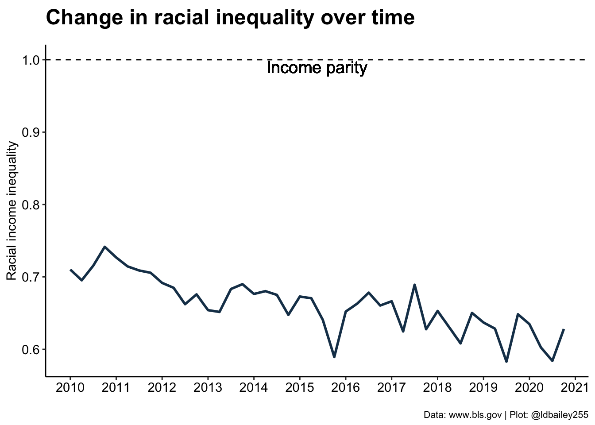

library(tidytuesdayR) #To download the data
library(dplyr) #For data wrangling
library(ggplot2) #For plotting
library(showtext) #Use fonts stored on the Google Fonts databaseThis will hopefully be the first in many TidyTuesday data visualization posts! This week I joined the TidyTuesday group at CorrelAid to brainstorm and troubleshoot ideas. You can see the plots from all the CorrelAid TidyTuesday meetups here.
Introduction: Analysing income inequality
Income and wealth inequality in the world’s major economies has become an increasing concern over the past decade [1, 2, 3]. We often see income inequality quantified using tools such as the Gini Coeffient or other more complex metrics, which compare the income of all individuals across society. Unfortunately, broad societal metrics often fail to highlight other inequalities between subgroups, such as gender and race. In this week’s TidyTuesday, I visualise a rough metric of racial inequality in the US since 2010, and demonstrate how things have become more unequal over time.
Setup: Data and packages
TidyTuesday Week 9 (2021) used employment and earning data from the US Bureau of Labor Statistics collected since 2010. There are a number of interesting ways we can wrangle and visualise this data, I’ll focus on racial inequality in income. We won’t need many advanced packages for this:
To start with we need to download the data and separate out employment and earnings data.
tuesdata <- tt_load(2021, week = 9)
Downloading file 1 of 2: `earn.csv`
Downloading file 2 of 2: `employed.csv`employed <- tuesdata$employed
earn <- tuesdata$earnWe’ll create a custom ggplot theme so we don’t need to make these aesthetic changes in every plot.
my_theme <- function(){
theme_classic() %+replace%
#Remove legend by default
theme(legend.position = "none",
#Make axes black
axis.text = element_text(colour = "black"),
#Make clear titles and caption
plot.title = element_text(size = 18, face = "bold", hjust = 0),
plot.caption = element_text(size = 8, hjust = 1))
}Exploration: How does the data look?
My idea was to look at racial differences in income, so we’ll focus on the earn data frame. Before we go any further, we need to have a quick look at the data and see how it’s structured.
head(earn)# A tibble: 6 × 8
sex race ethnic_origin age year quarter n_persons median_weekly_earn
<chr> <chr> <chr> <chr> <dbl> <dbl> <dbl> <dbl>
1 Both Sex… All … All Origins 16 y… 2010 1 96821000 754
2 Both Sex… All … All Origins 16 y… 2010 2 99798000 740
3 Both Sex… All … All Origins 16 y… 2010 3 101385000 740
4 Both Sex… All … All Origins 16 y… 2010 4 100120000 752
5 Both Sex… All … All Origins 16 y… 2011 1 98329000 755
6 Both Sex… All … All Origins 16 y… 2011 2 100593000 753I can already see a few difficulties! Firstly, the columns sex, race, and age include aggregate categories like ‘Both Sexes’ and ‘All Races’. We need to be careful how we deal with these columns so we don’t double count individuals. To start with, we’ll group all ages and sexes and just look at racial differences. Secondly, out measure of ‘time’ is separated into two columns ‘year’ and ‘quarter’. If we want to analyse trends over time we’ll need to combine these two pieces of information. We can create an aggregate ‘time’ column where each financial quarter is added to year as a fraction (e.g. 2010 quarter 1 = 2010.0, 2010 quarter 2 = 2010.25).
Note
‘Hispanic’ does not fit neatly within the ‘race’ categories and is instead included under ‘ethnic_origin’. For simplicity we’ll be ignoring this column, but we are likely missing some nuance by doing so!
plot_data <- earn %>%
#Consider aggregate groups for sex and age, but separate race.
filter(sex == "Both Sexes" & race != "All Races" & age == "16 years and over") %>%
#Create new time column (combine year and quarter)
mutate(time = year + (quarter-1)/4)Initial plots: What can we see when we start plotting?
Now we’ve got our data we can start plotting. I find it’s always best to visualise the data in as simple a format as possible before we try to achieve anything more complex and I always like the violin/boxplot combination as a first step.
ggplot(data = plot_data) +
geom_violin(aes(x = race, y = median_weekly_earn, fill = race),
colour = "black", width = 0.75) +
geom_boxplot(aes(x = race, y = median_weekly_earn),
colour = "black", width = 0.15, alpha = 0.25) +
scale_fill_manual(values = c("#DD5844", "#67B689", "#4383B4")) +
labs(x = "", y = "Median weekly income (USD$)",
title = "Comparison of earnings between racial groups",
subtitle = "",
caption = "Data: www.bls.gov | Plot: @ldbailey255") +
my_theme()We can already clearly see a difference in income between racial groups at this very broad aggregation. Has this improved or worsened over the past decade? We can break our plot down into individual quarters to show how income in the three racial groups has changed.
ggplot(data = plot_data) +
geom_col(aes(x = time, y = median_weekly_earn, fill = race),
colour = "black") +
scale_fill_manual(values = c("#DD5844", "#67B689", "#4383B4"), name = "Race:") +
scale_x_continuous(breaks = seq(2010, 2021, 1)) +
labs(x = "", y = "Median weekly income (USD$)",
title = "Change in income over time",
subtitle = "",
caption = "Data: www.bls.gov | Plot: @ldbailey255") +
my_theme() +
#Legend would be useful here
theme(legend.position = "bottom")
Digging deeper: Quantifying inequality
It looks like inequality has worsened over time, with earnings for those who identify as Asian appearing to increase more rapidly than Black or White. If we’re really interested in visualising this trend, we need some way to quantify the level of racial income inequality at any time point.
A crude (but easy!) way we can do this is just to look at the proportional difference between the lowest and highest income group. If racial income inequality is small, we should get a value close to 1. When inequality is large, this number will be below 1 as the income from the lowest earning group will be only a fraction of the higher earning group.
Note
Our measure seeks to identify racial income inequality regardless of who the lowest and highest earning racial group is in any quarter. Although it doesn’t occur in this data, it’s possible that the lowest and/or highest earning group could change over time!
plot_data_inequality <- plot_data %>%
#For every quarter, determine the ratio betwen lowest and highest earner
group_by(time) %>%
summarise(income_ratio = min(median_weekly_earn)/max(median_weekly_earn))ggplot(data = plot_data_inequality) +
geom_line(aes(x = time, y = income_ratio), colour = "#193D58", size = 1) +
geom_hline(aes(yintercept = 1), lty = 2) +
geom_text(aes(x = mean(plot_data_inequality$time), y = 0.99, label = "Income parity"), size = 5) +
scale_x_continuous(breaks = seq(2010, 2021, 1)) +
labs(x = "", y = "Racial income inequality",
title = "Change in racial inequality over time",
subtitle = "",
caption = "Data: www.bls.gov | Plot: @ldbailey255") +
my_theme()Warning: Using `size` aesthetic for lines was deprecated in ggplot2 3.4.0.
ℹ Please use `linewidth` instead.Warning: Use of `plot_data_inequality$time` is discouraged.
ℹ Use `time` instead.
In 2010, our measure of racial inequality gives a value around 0.75, meaning that the lowest earning group (Black) earned on average only 75% of the highest earning group (Asian). By 2020, this number was closer to 65%, a change of 10 percentage points! It seems that racial inequality is getting worse, but is this the same for both sexes? To answer this we’ll have to go back to the original data and include separate male and female data rather than ‘Both Sexes’.
inequality_by_sex <- earn %>%
filter(sex != "Both Sexes" & race != "All Races" & age == "16 years and over") %>%
#Create a time values (combine year and quarter)
mutate(time = year + quarter/4) %>%
#Racial income inequality at each time point for each sex
group_by(sex, time) %>%
summarise(income_ratio = min(median_weekly_earn)/max(median_weekly_earn), .groups = "drop")ggplot() +
geom_line(data = inequality_by_sex, aes(x = time, y = income_ratio, colour = sex), size = 0.75) +
labs(x = "", y = "Racial income inequality",
title = "Change in racial inequality for men and women",
subtitle = "",
caption = "Data: www.bls.gov | Plot: @ldbailey255") +
geom_hline(aes(yintercept = 1), lty = 2) +
geom_text(aes(x = mean(inequality_by_sex$time), y = 0.99, label = "Income parity"), size = 5) +
scale_colour_manual(name = "Sex", values = c("#266742", "#3255A2")) +
scale_x_continuous(breaks = seq(2010, 2021, 1)) +
scale_y_continuous(limits = c(NA, 1)) +
my_theme() +
theme(legend.position = "right")Interestingly, we see that racial income inequality is less severe in women (although it has also become worse over time).
Note
This doesn’t show that women earn more, just that the difference in income due to race is less for women!
The finishing touches: Making things look pretty
This a really interesting result, and a good foundation for a TidyTuesday submission. Now we just need to make it prettier. One issue for somebody viewing this data is the large quarter to quarter variation in our inequality measure. We can perhaps visualise the trends a little better by creating a rolling mean of inequality over 3 quarters. We can also add custom fonts and more informative titles/subtitles to make the plot easier to read.
#Create rolling mean data
rolling_mean <- inequality_by_sex %>%
group_by(sex) %>%
mutate(lag1 = lag(income_ratio),
lead1 = lead(income_ratio)) %>%
rowwise() %>%
mutate(rollingmean = mean(c(income_ratio, lag1, lead1)))
#Add sex symbols at last point to remove the legend
inequality_by_sex %>%
group_by(sex) %>%
slice(n()) %>%
ungroup() %>%
mutate(time = time + 0.5,
sex_symbol = c("\u2642", "\u2640")) -> sex_symbol#Load a font from Google Fonts
sysfonts::font_add_google("Oswald", "Oswald", regular.wt = 300)
sysfonts::font_add_google("Ubuntu Mono", "Ubuntu Mono")
#Specify that the showtext package should be used
#for rendering text
showtext::showtext_auto()
ggplot() +
geom_line(data = inequality_by_sex, aes(x = time, y = income_ratio, group = sex),
colour = "grey50", size = 1, alpha = 0.5) +
geom_line(data = rolling_mean, aes(x = time, y = rollingmean, colour = sex), size = 2) +
labs(x = "", y = "<- Less equal More equal ->",
title = "Racial income inequality in the USA",
subtitle = "Ratio between the income of the lowest and highest earning racial group",
caption = "Data: www.bls.gov | Plot: @ldbailey255") +
geom_hline(aes(yintercept = 1), lty = 2) +
geom_text(aes(x = mean(inequality_by_sex$time), y = 0.98, label = "Income parity"),
size = 7, family = "Oswald") +
geom_text(data = sex_symbol, aes(x = time, y = income_ratio, label = sex_symbol), size = 17) +
scale_colour_manual(name = "Sex", values = c("#266742", "#3255A2")) +
scale_x_continuous(breaks = seq(2010, 2021, 1)) +
scale_y_continuous(limits = c(NA, 1)) +
theme_classic() +
theme(legend.position = "none",
axis.title.y = element_text(face = "bold", vjust = 0.9, size = 18, family = "Oswald"),
axis.text = element_text(colour = "black", size = 12, family = "Oswald"),
plot.title = element_text(face = "bold", size = 32, family = "Oswald"),
plot.subtitle = element_text(size = 20, family = "Oswald"),
plot.caption = element_text(size = 10, family = "Ubuntu Mono"),
plot.margin = margin(30, 30, 30, 30))Conclusion:
This plot isn’t the most technically difficult, we’re just using basic geom_xxx() functions, but we used a bit of data wrangling to extract more information from some messy original data and present an interesting (and troubling) story.